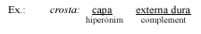

Exercicis de pràctica i reforç

1. Trobeu l'hiperònim adequat que englobi cada una de les sèries següents:
1. alumini, estany, coure, ferro, mercuri, níquel
2. badia, cala, desembocadura, platja, golf, cap
3. gregal, tramuntana, xaloc, migjorn, ponent, llevant
4. alfàbrega, llorer, menta, fonoll, sàlvia, farigola, orenga
5. àguila, gavina, oreneta, rossinyol, voltor, corb, oca
6. bordar, piular, rugir, renillar, bramar, grunyir, grallar
7. flauta, harmònica, saxòfon, clarinet, gaita, trompeta

2. Quan busquem un substantiu al diccionari, la definició acostuma a començar amb un mot genèric (hiperònim) que es va concretant gràcies als complements que s'hi poden adjuntar.

Busqueu, ara, amb l'ajut del diccionari, l'hiperònim que intervé en les definicions dels mots següents:
|
1. dòmino |
6. despit |
|
2. infant |
7. aroma |
|
3. piragu |
8. cervesa |
|
4. suplici |
9.estigma |
|
5. vida |
10. llavor |
3. Digueu si les parelles de mots següents es poden considerar sinònims parcials, sinònims totals, o bé si són falsos sinònims. Heu de consultar el diccionari en cas de dubte.
4. Hi ha sinònims per raons dialectals: en diferents zones on es parla el català un significat és dit de maneres diferents. Encara que aquestes paraules no siguin pròpies de la nostra zona, és bo conèixer-les, ja que això facilita la intercomprensió amb els parlants d'altres llocs.
Feu parelles de sinònims:
Balear
Valencià
Nord-occidental
5. Hem canviat alguns mots de les frases d'una carta al director d'una revista. Pel context, veureu que no encaixen. Torneu-les a escriure substituint aquests mots per uns altres:
a) Cal combatre amb debilitat les causes dels accidents.
b) Cal replantejar-se en broma la utilitat del cotxe.
c) S'ha de fer servir el cotxe irracionalment i quan sigui supèrfluament necessari.
d) El cotxe ha esdevingut un element prepotent i discret.
e) Les estadístiques sobre morts i ferits en accidents sempre són càlides.
6. Digueu quina altra paraula es podria utilitzar en comptes de la que veieu remarcada a cada frase. Us donem una llista de mots (si cal, flexioneu-los): comportament, enllaç, conseqüència, escàs, acordar, tou, atenuant, tancat, soroll
Va sentir una fressa provinent de l'habitació del costat.
És una quantitat molt minsa.
El seu capteniment em preocupa.
A aquests animals no els agrada estar captius.
Van concertar un preu únic.
Aquell maridatge no va anar bé.
Hi ha un medicament pal·liatiu per a aquesta malaltia.
Aquest fet tindrà seqüeles.
És una superfície blana.
7. Substituïu el mot suportar en les frases de més avall per un dels verbs següents: treballar, pair (sentit fig.), aguantar, tenir, tolerar:
a) Al final de la jornada, després de tant estar dret, les cames no em suportaven.
b) Aquesta biga suporta massa, pel gruix que té.
c) Ja no puc suportar més les seves ironies.
d) No pot suportar el professor de matemàtiques.
e) El pont era capaç de suportar moltes tones.